Before you are able to view the 50StatesInfo website, make sure you have installed XAMPP to your computer.
Downloading XAMPP
To start, go to your browser and type in XAMPP in the search bar. Once you have clicked
"Search" you should get the following result:
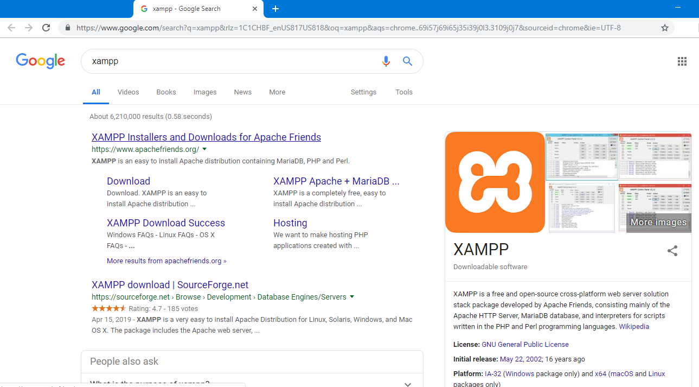
Click on the first link and you should be directed to this webpage:
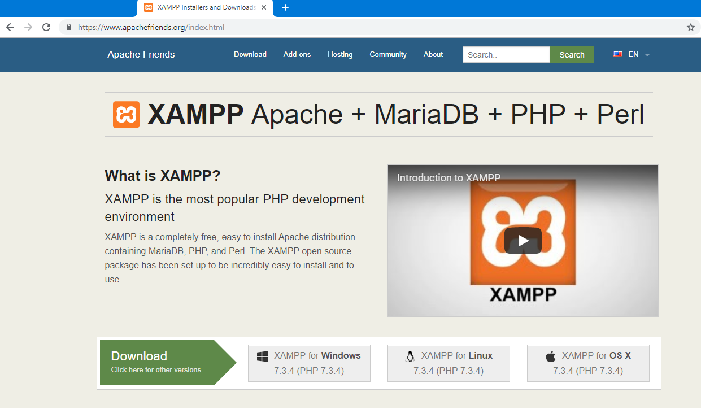
Here you can click on the version you need to download for your computer. I will be choosing
XAMPP for Windows for demonstration purposes.
Once you click
on the version you need, a new page will open in a new tab on your browser. Wait for the file to finish
downloading and once it is done, click on the file to open it. I have attached a picture below
with a yellow box and a yellow star to help you locate the file once it is finished downloading.
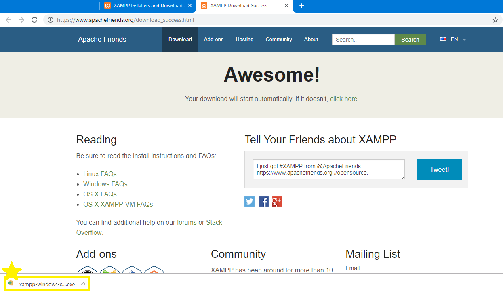
Once you have clicked on the file, a notification will come up on your computer asking you if
will allow the file to make changes to your computer. Click "Yes" and follow the instructions
that follow, making sure to go along with the default settings.
Now that you have finished downloading XAMPP onto your computer, read the following directions
to get the 50StatesInfo website running on your machine!
Moving Files
This section helps with moving folders into the XAMPP folder for viewing webpages and websites on web browsers.
Open up your File Explorer folder that should be located at the bottom section of your computer. Once the
folder opens up, go to the left-hand side of the window and click on "Windows (C:)".
The following image shows where the "Windows (C:)" folder is located at by having a yellow box around it.
The image also shows that we will now be clicking on the folder named "xampp".
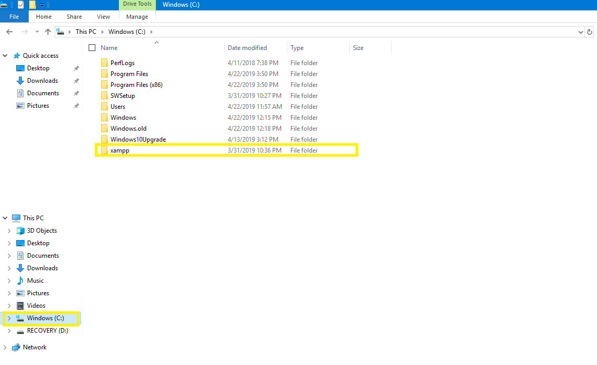
Once clicking on the folder named "xampp", the following image should appear on your screen.
Click on the folder named "htdocs", it is highlighted once again in a yellow box in the image below.
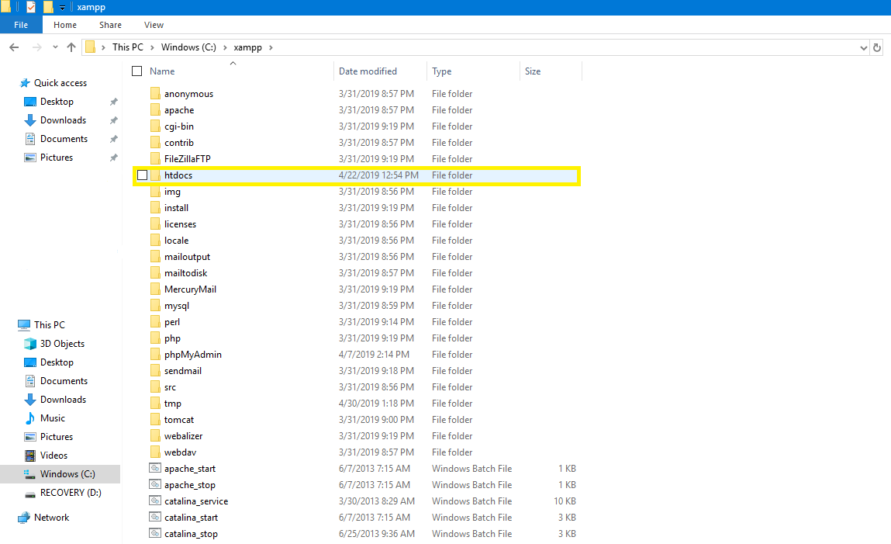
Now that we are in the "htdocs" folder, we can copy and paste the folder that we wish to view on our browser.
You may also drag and drop the folder that you wish to view online here. The folder that we will be using
is named "Senior Project". In the image below I have highlighted the folder for you to compare your screen to.
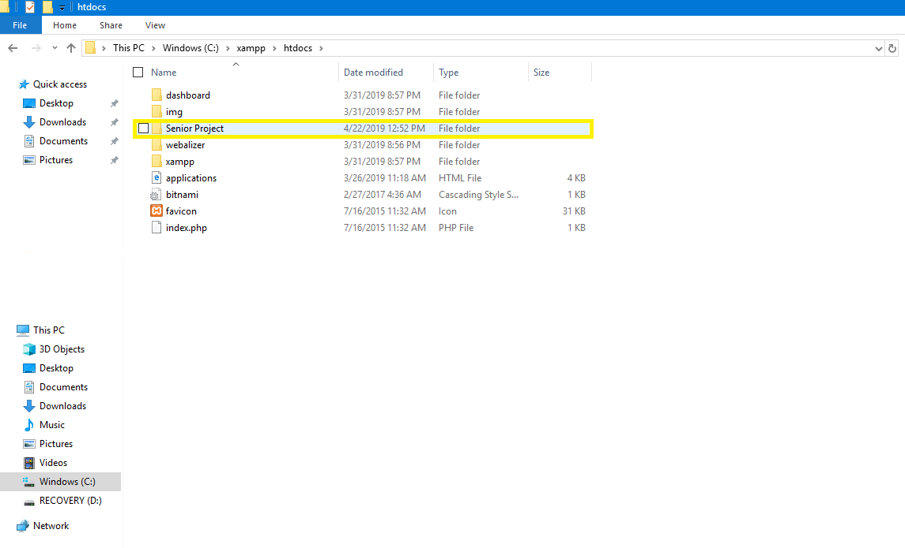
Viewing the file/folder
This section helps with being able to view the folder "Senior Project" that we have placed into the "htdocs" folder
on a browser.
Go to the start menu and click on the XAMPP folder on your computer. Once you have selected the folder, go down
to "XAMPP Control Panel" and click on the application.
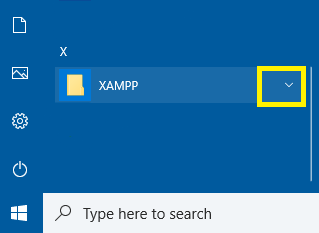
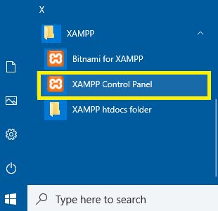
Once the application loads up, it should look like the image displayed below.
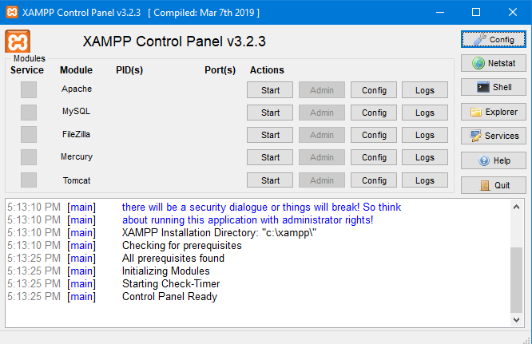
Click on the "Start" button next to "Apache" and "MYSQL". The applications are ready to go
once the color that highlights both names is green like in the picture below.
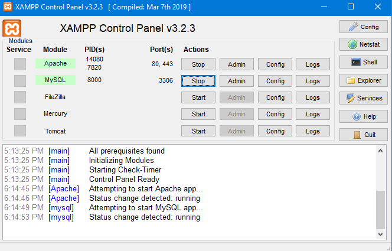
Now that the Apache app and the MYSQL app are running, we will go back to the browser to view
the 50StatesInfo website. In the browser, type in
localhost/Senior Project/Senior Project Homepage.php
in the search bar as pictured below.
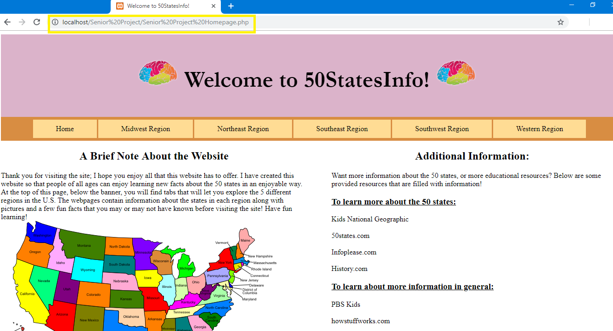
What we just typed is calling the localhost, telling it that we have activated Apache and MYSQL
in the XAMPP Control Panel to help us view the website. The Senior Project that follows the localhost
is calling the folder in htdocs where we have placed the website we are trying to view. Finally, Senior Project
Homepage.php is the folder that holds all of the information that will help to run the 50StatesInfo website.
Navigating through 50StatesInfo website
The homepage
The homepage of 50StatesInfo has a quick section on the left-hand side explaining how the website
works and why it was made. On the right-hand side of the webpage there are links to visit that open in
a new tab on the browser you are on. The links also change color as it appears in the image below.
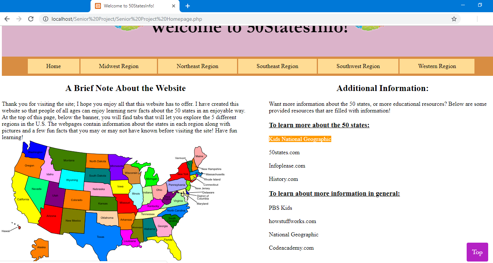
The following pages of the 50StatesInfo website contains information on the left-hand side of each page
over the climate in the region along with tables showing pictures of the states in that specific region. The
pictures are of each state flag, flower, and of the state itself. There are also tables that help with expanding
the abbreviations of each state to make for a better experience with reading the picture tables.
The right-hand side of each page shows a table that is scrollable and holds textual information over each state in
the region. It is strongly advised to view both the textual information on the right-hand side of the webpage
with the left-hand side to add to a more well-rounded experience.
Below I have included what each webpage on the 50StatesInfo website should look like, enjoy learning!
It can be noted that each webpage has a button that appears once you have scrolled down the page, that
button appears with the letters "Top" and is colored purple. Once you hover over the button, the color
of it should turn orange. This button, once clicked, takes you back up to the top of the webpage, like
the button that is included here on the manual website!